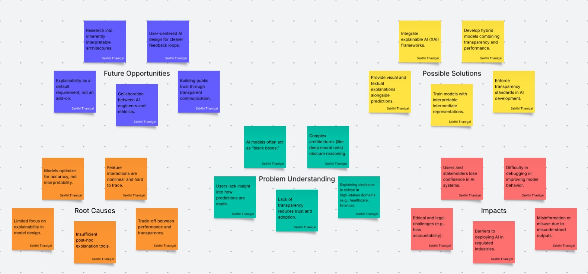

Highlighted projects
Problem Statement
Problem Statement: While AI models can predict outcomes efficiently, few provide transparent explanations for their decisions.
Click the image or title above to view the full problem statement as a PDF.

Affinity Diagram
This affinity diagram groups ideas related to AI transparency, including user trust, explanation clarity, regulatory constraints, ethical concerns, and UI design patterns for surfacing model reasoning.
Click the image or header to view the full affinity diagram as a PDF.
Sketches

These sketches explore different interface ideas for making AI decisions more transparent, such as showing decision steps, highlighting key factors, and displaying source or model confidence alongside each prediction.